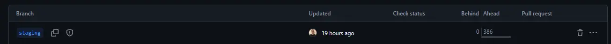

Sobre
O bit-flow é nossa adaptação do conhecido git-flow.
Um fluxo para o git, que utiliza um único branch de desenvolvimento para otimizar
o controle de branches onde se utiliza dois branches fixos para os ambientes de testes e produção
📌 Por onde começar?
Identifique os tipos de branches
Utilizaremos prefixos tipados para nomeação dos branches, isso facilitará o uso do fluxo.
Confira as nomenclaturas e o que deve compor cada tipo do branch
-
: Implementação de um recurso, nomeado com o prefixo "feat/"
-
: Correções e ajustes, nomeado com o prefixo "fix/"
-
: Alterações urgentes, nomeado com o prefixo "hotfix/"
-
: Refatoração, nomeado com o prefixo "ref/"
-
: Versionamento para produção, nomeado com o prefixo "release/"
-
: Correções e ajustes de um versionamento, nomeado com o prefixo "release/fix/"
-
: Resolução de conflitos, nomeado com o prefixo "conf/"
-
: Testes de itens em desenvolvimento, branch fixo de nome "staging"
-
: Versão atual em produção, branch fixo de nome "master"
Padrões de nomenclaturas
Como utilizamos o JIRA, aqui definiremos alguns padrões para facilitar nosso fluxo e entregas
-
branch: use a regra de prefixo, seguida da identificação do ticket, como: feat/APP-42
Dessa forma reduzimos as chances de duplicação de branches para um mesmo ticket
-
pull-request (PR): respeite a semântica validada pelo git, seguida da identificação do ticket, como: feat: APP-42
Assim facilitando as buscas pelas PR's de um desenvolvimento
Prepare o ambiente
⚠️ Atenção!
Esse passo é obrigatório para o correto funcionamento do fluxo
Para aplicar esse fluxo é necessário que o o branch esteja em sincronia com o branch
-
Crie um branch com base no branch . É recomendado nomear de forma a facilitar a identificação para futura exclusão, aqui identificaremos como sync/staging
-
Faça checkout no seu novo branch sync/staging
-
Execute um merge do branch no branch sync/staging
-
Resolva os possíveis conflitos, caso ocorram
-
Quando concluír a operação, crie uma pull-request para
-
Após o review e merge, o branch sync/staging deve ser excluído, mantendo no repositório apenas branches ativos
-
Para certificar que a operação foi realizada corretamente, basta verificar a situação do branch via web, a coluna behind deve estar zerada 
Instalação
Nada aqui ainda
Quais são os branches de desenvolvimento?
-
: Destinado a implementação de um recurso, nomeado com o prefixo "feat/"
-
: Utilizado para correções e ajustes, nomeado com o prefixo "fix/"
-
: Próprio para refatoração, nomeado com o prefixo "ref/"
Como implementar esses branches?
* Os branches de desenvolvimento seguem o mesmo fluxo, portanto serão represetandos aqui pelo branch dev
- Crie seu branch com base no branch , nomeando de acordo com o tipo de desenvolvimento
- Após o desenvolvimento, faça uma pull-request para , onde os testes serão realizados
- Em caso de rejeição ou ajustes realize as alterações no próprio branch e faça uma nova pull-request para
- Quando aprovado, faça uma pull-request para o respectivo
🚨Tenho uma urgência, o que fazer?
Nessa situação é preciso aplicar a alteração diretamente na versão de produção, portanto inicie um fluxo de hot-fix
-
: Exclusivo para alterações urgentes, nomeado com o prefixo "hotfix/"
- Crie seu branch com base no branch , nomeando com o prefixo "hotfix/"
- Quando concluído (desenvolvimento e testes), faça uma pull-request para
- Caso precise de novos ajustes realize as alterações no próprio branch e faça uma nova pull-request para
- Faça uma pull-request para e o existente
Release
O que é um release?
Trata-se do branch onde é preparada uma nova versão da aplicação, nomeado com o padrão de nomenclatura "release/versao", sendo:
- Prefixo "release/"
- Versão da aplicação, exemplo: "1.2024.0523"
Como lançar um release?
- Crie o branch com base no branch , nomeando como "release/VERSAO"
- Faça o merge de todos os braches que deseja liberar nesse
- Exclua os branches mergeados nesse , assim reduzindo a quantidade de branches existentes
- Caso necessite ajustes consulte a seção release/fix
- Após validar a versão, crie uma pull-request para os branches e
Como corrigir um release?
- Crie o branch com base no branch do respectivo , nomeando com o prefixo "release/fix/VERSAO"
- Ao concluir o desenvolvimento, faça uma pull-request para branch do respectivo , para novos teste no respectivo ambiente
- Faça uma pull-request para , mantendo assim o sincronismo entre os branches fixos e reduzindo as chances de conflitos pós release
Conflitos
O que são conflitos?Existência de alterações no mesmo bloco de código de um arquivoComo solucionar conflitos?
-
A resolução de conflitos inicia ao tentar criar a pull-request de seu branch, e no comparativo é exibida a mensagem que não poderá ser mergeado automaticamente

-
Nesse momento abandone essa pull-request e crie um novo branch com base no seu branch, nomeando no padrão de prefixo "conf/", assim o identificando como branch de conflito:

-
Faça o checkout para o novo branch, em seguida faça um merge do branch de destino e resolva os conflitos que surgirem

-
Após resolver os conflitos no novo branch, crie a pull-request do novo branch para o branch de destino, nesse momento não devem existir conflitos

💡 Dicas
-
Nunca crie um branch com base em !
Caso seja necessário tenha em mente que seu branch vai conter todas as implementações da base, ou seja não poderá ser mergeado diretamente no branch , invalidando esse fluxo -
Evite merge do branch no seu branch!
Nesse fluxo essa necessidade pode aparecer apenas em caso de conflito, portanto consulte a seção Como solucionar conflitos? -
Nunca crie uma pull-request para !
Os branches a serem liberados devem compor um branch , pois esse será mergeado integralmente nos branches e -
Atenção as dependência ou compartilhamento do branch!
Quando houver a dependência ou a necessidade de operar em um branch já existente, que não seja de sua autoria, alinhe com o responsável e procurem a melhor forma de se manter dentro do fluxo -
Identifique corretamente seu commit!
Para efeitos de histórico o relevante é o commit, portanto o descreva de forma clara e específica. Eventualmente essa identificação pode salvar muito tempo
(Exemplo de uso com jira seria iniciar a descrição do commit com a identificação do ticket, como: "TICKET-ID: Descrição")
Download
-
Gostou? faça o download desse fluxo e mantenha perto de você
-